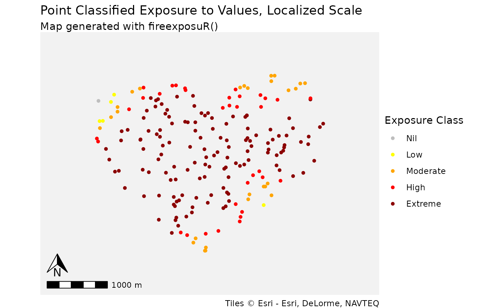

Visualize exposure to values in a summary table or map
Source:R/fire_exp_extract_vis.R
fire_exp_extract_vis.Rdfire_exp_extract_vis() standardizes the visualization of
outputs from fire_exp_extract() as a summary table or a map by classifying
exposure into predetermined exposure classes.
Arguments
- values_ext
Spatvector of points or polygons from
fire_exp_extract()- classify
character, either
"local","landscape", or"custom", to specify classification scheme to use. The default is"local". If set to"custom": the parameterclass_breaksmust be used.- class_breaks
vector of numeric values between 0-1. Ignored unless
classify = "custom". See details.- method
character, either
"max"or"mean". Ifvalues_extare polygons the default is"max".This parameter is ignored whenvalues_extare point features.- map
Boolean. When
TRUE, a map is returned as a ggplot object. The default isFALSE.- zoom_level
(Optional). Numeric. Ignored when
map = FALSE. set the zoom level for the base map tile. See details. Defaults if:classify = "local"or"custom"the zoom level default is12classify = "landscape"the zoom level default is7
- title
(Optional) String. Ignored when
map = FALSE. A custom title for the plot. The default is"Classified Exposure to Values"
Details
This function visualizes the outputs from fire_exp_extract() with classes.
Classes can be chosen from the pre-set "local" and "landscape" options,
or customized. To use a custom classification scheme, it should be defined
with a list of numeric vectors defining the upper limits of the breaks. A
Nil class is added automatically for exposure values of exactly zero.
Local classification breaks are predefined as c(0.15, 0.3, 0.45, 1):
Nil (0)
0 - 0.15
0.15 - 0.3
0.3 - 0.45
0.45 - 1
#' Landscape classification breaks are predefined
as c(0.2, 0.4, 0.6, 0.8, 1):
Nil (0)
0 - 0.2
0.2 - 0.4
0.4 - 0.6
0.6 - 0.8
0.8 - 1
Spatial reference
This function dynamically pulls map tiles for a base map when map = TRUE.
The inputs are projected to WGS 84/Pseudo-Mercator
(EPSG:3857) to align them with the map tiles.
Zoom level
The map tile zoom level may need to be adjusted. If the base map is blurry, increase the zoom level. Higher zoom levels will slow down the function, so only increase if necessary. Reference the OpenStreetMap Wiki for more information on zoom levels.
Examples
# read example hazard data
hazard_file_path <- "extdata/hazard.tif"
hazard <- terra::rast(system.file(hazard_file_path, package = "fireexposuR"))
# read example area of interest geometry
geom_file_path <- "extdata/polygon_geometry.csv"
geom <- read.csv(system.file(geom_file_path, package = "fireexposuR"))
# generate an area of interest polygon with the geometry
aoi <- terra::vect(as.matrix(geom), "polygons", crs = hazard)
# generate random points within the aoi polygon
points <- terra::spatSample(aoi, 200)
# compute exposure
exposure <- fire_exp(hazard)
values_exp <- fire_exp_extract(exposure, points)
# summarize example points in a table
fire_exp_extract_vis(values_exp, classify = "local")
#> scale method class_range n prop
#> 1 local Point Nil 1 0.005
#> 2 local Point 0 - 0.15 5 0.025
#> 3 local Point 0.15 - 0.3 27 0.135
#> 4 local Point 0.3 - 0.45 34 0.170
#> 5 local Point 0.45 - 1 133 0.665
# visualize example points in standardized map
fire_exp_extract_vis(values_exp, map = TRUE)
